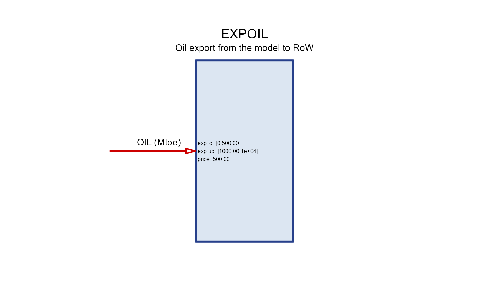

Export object represent commodity export to the Rest of the World (RoW).
Usage
newExport(
name,
desc = "",
commodity = "",
unit = NULL,
reserve = Inf,
exp = data.frame(),
misc = list(),
...
)Arguments
- name
character. Name of the export object, used in sets.
- desc
character. Description of the export object.
- commodity
character. Name of the exported commodity.
- unit
character. Unit of the exported commodity.
- reserve
numeric. Total accumulated limit through the model horizon.
- exp
data.frame. Export parameters.
- region
character. Region name to apply the parameter; use NA to apply to all regions.
- year
integer. Year to apply the parameter; use NA to apply to all years.
- slice
character. Time slice to apply the parameter; use NA to apply to all slices.
- exp.lo
numeric. Export lower bound.
- exp.up
numeric. Export upper bound.
- exp.fx
numeric. Fixed export volume, ignored if NA. This parameter overrides
exp.loandexp.up.
- misc
list. Additional information.
Details
export is a type of process that adds an "external" source to a commodity
to the model. The Rest of the World (RoW) is not modeled explicitly,
export and import objects define and control the exchange with the RoW.
The operation of the export object is similar to the demand objects,
the two different classes are used to distinguish domestic and external
sources of final consumption.
The export is controlled by the exp data frame, which specifies
bounds and fixed values for the export of the export flow.
The exp.fx column is used to specify fixed values of the export flow,
making the export flow exogenous. The exp.lo and exp.up columns are used
to specify lower and upper bounds of the export flow, making the export flow
endogenous. The price column is used to specify the exogenous price
for the export commodity.
The reserve slot is used to set limits on the total export over the
model horizon.
Examples
EXPOIL <- newExport(
name = "EXPOIL", # used in sets
desc = "Oil export from the model to RoW", # for own reference
commodity = "OIL", # must match the commodity name in the model
unit = "Mtoe", # for own reference
exp = data.frame(
region = rep(c("R1", "R2"), each = 2), # export region(s)
year = rep(c(2020, 2050)), # export years
price = 500, # export price in MUSD/Mtoe (USD/t),
exp.up = rep(c(1e3, 1e4), each = 2), # upper bound for export in each year
exp.lo = rep(c(5e2, 0), each = 2) # lower bound for export in each year
)
)
draw(EXPOIL)
